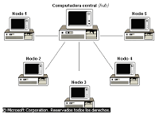

El propósito principal de los medios de comunicación es, precisamente, comunicar, pero según
su tipo de ideología
pueden especializarse en; informar, educar, transmitir, entretener, formar opinión, enseñar,
controlar, etc.
Positivas. Las características positivas de los medios de comunicación residen en que
posibilitan que
amplios contenidos de información lleguen a extendidos lugares del planeta en forma
inmediata. Los medios
de comunicación, de igual manera, hacen posible que muchas relaciones personales se
mantengan unidas o,
por lo menos, no desaparezcan por completo. Otro factor positivo se da en el ámbito
económico: quien posea
el uso de los medios puede generar un determinado tipo de consciencia sobre una especie de
producto, es decir,
puede generar su propia demanda, ya que los medios muchas veces cumplen la función de
formadores de opinión.
Entonces, visto desde el ámbito empresarial, es un aspecto ampliamente positivo al hacer
posible el marketing y
anuncios para el mundo.
Negativas. Las características negativas recaen en la manipulación de la información y el
uso de la
misma para intereses propios de un grupo específico.
